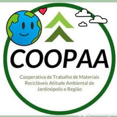

Sobre o Onde Levo?
Um portal público e gratuito que ajuda os moradores de Jardinópolis a descobrir onde descartar corretamente seus resíduos.
O problema
Muita gente não sabe onde levar pilhas, eletrônicos, remédios, lâmpadas, móveis ou óleo de cozinha. O resultado é descarte em ruas, terrenos baldios e cursos d'água, com mais enchentes, pragas e contaminação.
Como usar
- Escolha o que você quer descartar.
- Digite o seu bairro (ou deixe em branco para ver todos os pontos).
- Veja o endereço, o horário e o mapa do ponto de coleta.
Parceiros
Instituto Kaio Martins
[descreva o papel do instituto]

COOPAA
[descreva a parceria, quando confirmada]
Conhece um ponto de coleta?
Se você tem um comércio, escola ou entidade que recebe algum material, ou conhece um ponto que ainda não está no site, entre em contato: [inserir e-mail ou WhatsApp].
Objetivos de Desenvolvimento Sustentável
ODS 11: cidades e comunidades sustentáveis.
ODS 12: consumo e produção responsáveis.
Fontes e referências
- Brasil. Lei nº 12.305/2010 (Política Nacional de Resíduos Sólidos). planalto.gov.br
- ABREMA. Panorama dos Resíduos Sólidos no Brasil 2025 (ano-base 2024). abrema.org.br. Números divulgados em: Movimento Econômico, 08/12/2025
- ITU e UNITAR. The Global E-waste Monitor 2024. unitar.org
- Ministério da Saúde. Painel de Monitoramento das Arboviroses, dados de 2024 reproduzidos em: SBT News, 31/12/2024. Informações gerais: gov.br/saude
- Sabesp (estimativa sobre óleo de cozinha), citada em: Brasil 61
- Brasil. Decreto nº 10.388/2020 (logística reversa de medicamentos domiciliares). legis.senado.leg.br
- Conama. Resolução nº 401/2008 (pilhas e baterias). Informações sobre logística reversa: sinir.gov.br
- Reciclus. Logística reversa de lâmpadas (busca de pontos por CEP). reciclus.org.br
- Green Eletron. Gestora de logística reversa de eletroeletrônicos e pilhas. greeneletron.org.br
- ONU Brasil. ODS 11 e ODS 12. ODS 11 · ODS 12